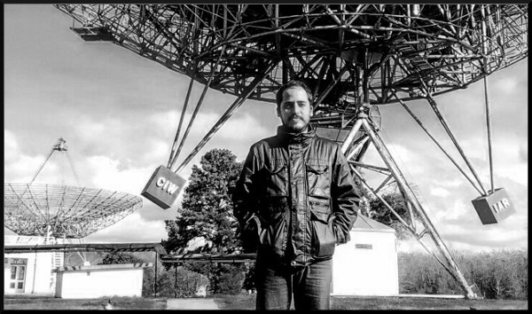

Novedades
2025 /// Promocionado a Investigador Independiente de CONICET
2024 /// Premio a la Labor Científica Universidad Nacional de La Plata
2023 /// Premio Enrique Gaviola Academia Nacional de Ciencias
2022 /// Premio Estímulo en Astronomía Academia Nacional de Ciencias Exactas
Artículos recientes destacados
Acreción en objetos compactos desde los rayos X
(FG, BAAA 2025)
Unveiling hidden variability components in XRBs
(Méndez, Peirano, FG+24)
The soft-to-hard transition of MAXI J1820+070
(Ma, Méndez, FG+23)
Relativistic X-ray reflection and absorption in GX 13+1
(Saavedra, FG+23)
A new interactive Catalogue of HMXBs in the Galaxy
(Fortin, FG+23)
Resultados recientes de la Colaboración PuMA
Constraints on GWs from the 2024 Vela pulsar glitch
(LVK, PuMA+26)
Giant radio pulses from XTE J1810-197 with IAR
(Araujo-Furlan, Romero, PuMA+26)
Glitch-induced profile changes in PSR J0742-2822
(Zubieta, FG+25)
Timing irregularities and Glitches from IAR campaign
(Zubieta, FG+24)
Artículos Publicados en Nature y Nature Astronomy
Jet-Corona coupling in GRS 1915+105 (Méndez, Karpouzas, FG+22)
A surge of light at the birth of SN2016gkg (Bersten, Folatelli, FG+18)